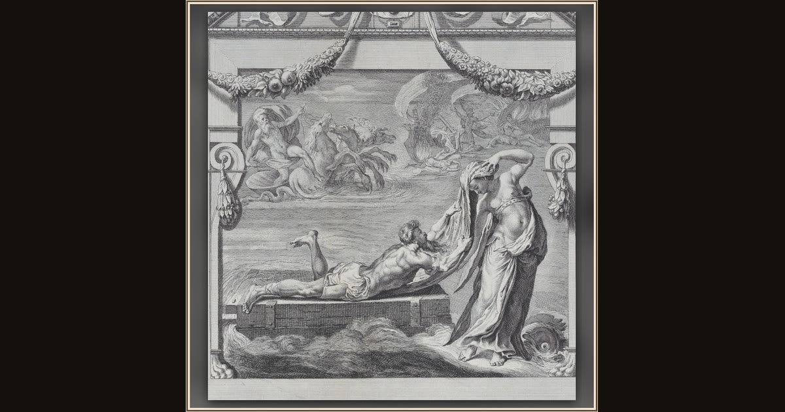

Plate 26: Ulysses escaping on a raft with the aid of the sea deity Leucothea
Bartolomeo Crivellari, after intermediary drawing by Gabriel Söderling, after design by Pellegrino Tibaldi; text by Giampietro Zanotti · 1756 · The Metropolitan Museum of Art · New York, USA
Leucothea reaches the storm-battered Odysseus on his still-floating raft and gives him an immortal veil, telling him to abandon the raft and swim for shore. Explore its place in Book V of the Odyssey.